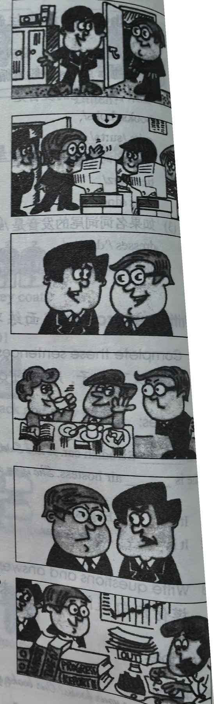
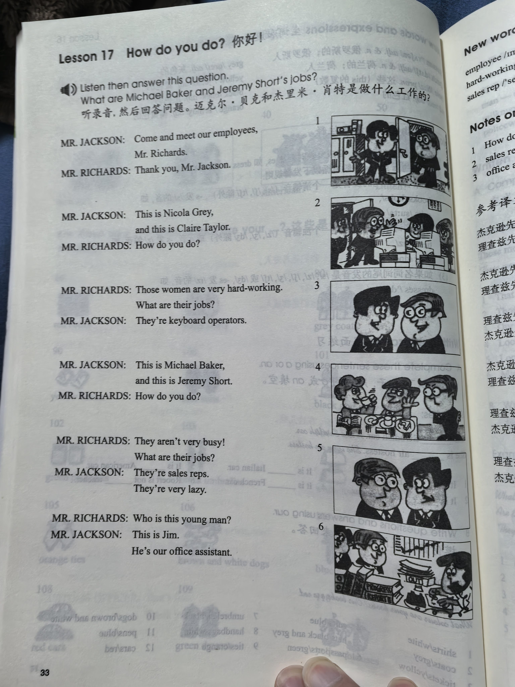
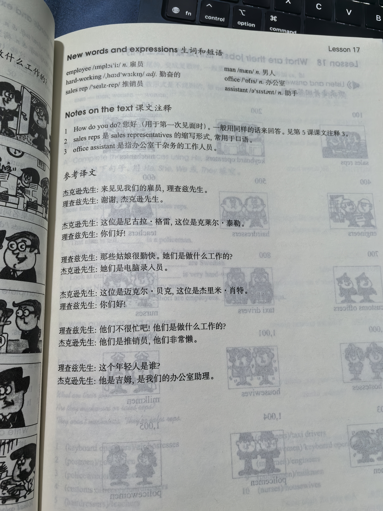

Lesson content · 课文
Lesson 17: How do you do? · 你好！
Listen then answer this question. 听录音，然后回答问题。
What are Michael Baker and Jeremy Short’s jobs?
迈克尔·贝克和杰里米·肖特是做什么工作的？
MR. JACKSON: Come and meet our employees, Mr. Richards.
MR. RICHARDS: Thank you, Mr. Jackson.
MR. JACKSON: This is Nicola Grey, and this is Claire Taylor.
MR. RICHARDS: How do you do?
MR. RICHARDS: Those women are very hard-working. What are their jobs?
MR. JACKSON: They’re keyboard operators.
MR. JACKSON: This is Michael Baker, and this is Jeremy Short.
MR. RICHARDS: How do you do?
MR. RICHARDS: They aren’t very busy! What are their jobs?
MR. JACKSON: They’re sales reps. They’re very lazy.
MR. RICHARDS: Who is this young man?
MR. JACKSON: This is Jim. He’s our office assistant.

New words and expressions · 生词和短语
| Word · 单词 | Pronunciation · 音标 | Meaning · 词义 |
|---|---|---|
| employee | /ɪmˈplɔɪiː/ | n. 雇员 |
| hard-working | /ˌhɑːdˈwɜːkɪŋ/ | adj. 勤奋的 |
| sales rep | /ˈseɪlz rep/ | 推销员 |
| man | /mæn/ | n. 男人 |
| office | /ˈɒfɪs/ | n. 办公室 |
| assistant | /əˈsɪstənt/ | n. 助手 |
Notes on the text · 课文注释
- How do you do? 您好（初次见面时）。一般用同样的语句来回答。见第5课课文注释3。
- sales reps 是 sales representatives 的缩写形式，常用于口语。
- office assistant 是指办公室干杂务的工作人员。
Chinese translation · 参考译文
杰克逊先生：来见见我们的雇员，理查兹先生。
理查兹先生：谢谢，杰克逊先生。
杰克逊先生：这位是尼古拉·格雷，这位是克莱尔·泰勒。
理查兹先生：你们好！
理查兹先生：那些姑娘很勤快。她们是做什么工作的？
杰克逊先生：她们是电脑录入人员。
杰克逊先生：这位是迈克尔·贝克，这位是杰里米·肖特。
理查兹先生：你们好！
理查兹先生：他们不很忙吧！他们是做什么工作的？
杰克逊先生：他们是推销员，他们非常懒。
理查兹先生：这个年轻人是谁？
杰克逊先生：他是吉姆，是我们的办公室助理。
Practice · 课文练习
Understand the lesson · 课文理解
Comprehension · 理解题
Answer the question about the lesson text. 根据课文回答问题。
-
comprehension: Comprehension · 理解题 — What are Michael Baker and Jeremy Short’s jobs?
Practice worksheet · 配套练习
A. Dialogue
Read this dialogue. Fill in the missing words. 填空。
-
worksheet: A. Dialogue — Mr. Jackson: Please come and ____ our employees.
You: ____ you, Mr. Jackson.
Mr. Jackson: This is Nicola and this is Claire.
Nicola and Claire: How do you do?
You: ____ ____ ____ ____?
Mr. Jackson: These ____ are very hard-working.
You: What ____ ____ jobs?
Mr. Jackson: They’re ____ operators. What’s your ____?
You: I’m ____ student. And I’m very ____, too!
B. Vocabulary
Choose the correct job. 用括号中正确的词填空。
-
worksheet: B. Vocabulary — What’s her job? — She’s a ____. (engineer / housewife)
-
worksheet: B. Vocabulary — What’s his job? — He’s a ____. (policewoman / postman)
-
worksheet: B. Vocabulary — What are their jobs? — They’re ____. (policeman / policemen)
-
worksheet: B. Vocabulary — What’s Michael’s job? — He’s a ____. (sales rep / keyboard operators)
-
worksheet: B. Vocabulary — What’s Mary’s job? — She’s an ____. (air hostesses / office girl)
-
worksheet: B. Vocabulary — What are Mike and Jim’s jobs? — They’re ____. (sales rep / sales reps)
-
worksheet: B. Vocabulary — What are Tim and John’s jobs? — They’re ____. (milkmen / housewives)
-
worksheet: B. Vocabulary — What’s his job? — He’s an ____. (Customs officer / office assistant)
C. Numbers
Write these numbers in figures. 用阿拉伯数字表示以下数词。
-
worksheet: C. Numbers — two hundred
-
worksheet: C. Numbers — six hundred
-
worksheet: C. Numbers — nine hundred
-
worksheet: C. Numbers — four hundred and two
-
worksheet: C. Numbers — eight hundred and ten
-
worksheet: C. Numbers — a thousand and one
Original images · 原图对照
Expand a page to compare it with the transcription. Open the original in a new tab to zoom in.
展开原图核对文字，也可以在新标签页打开原图放大查看。
Lesson text and oral practice · 课文与口头练习
Open original · 打开原图 ↗ Download original · 下载原图


Vocabulary, notes and written exercises · 生词、注释与书面练习
Open original · 打开原图 ↗ Download original · 下载原图



Grammar practice · 语法练习
I. Write the plural form of each word
- a watch - two ___
- a man - two ___
- a policeman - two ___
- an air hostess - two ___
- an assistant - two ___
- a box - two ___
- a housewife - two ___
- a policewoman - two ___
- a postman - two ___
- a dress - two ___
- a woman - two ___
- a class - two ___
II. Answer using the cues
Example: What are their jobs? (policeman) -> They're policemen.
- What are these men's jobs?
(milkman) - What are your two brothers' jobs?
(engineer) - What are these women's jobs?
(housewife) - What are the girls' jobs?
(nurse) - What are your jobs?
(policewoman) - What are their jobs?
(office assistant) - What are these young men's jobs?
(sales rep) - What are the girls' jobs?
(air hostesses) - What are your jobs?
(postman)
III. Rewrite the sentences in the plural according to the example
Example: That office assistant is hard-working. -> Those office assistants are hard-working.
- That policeman is tall.
- That housewife is fat.
- That teacher is very old.
- That employee is young.
- That air hostess is very thin.
- That dress is very smart.
- That mechanic is busy.
- That postman is lazy.
- That hat is lovely.
- The Customs officer is strong.
- The dog is black.
- The nurse is nice.
- The bag is brown.
Your notes and answers
Use this space for longer responses or exercises that do not have an individual answer box.